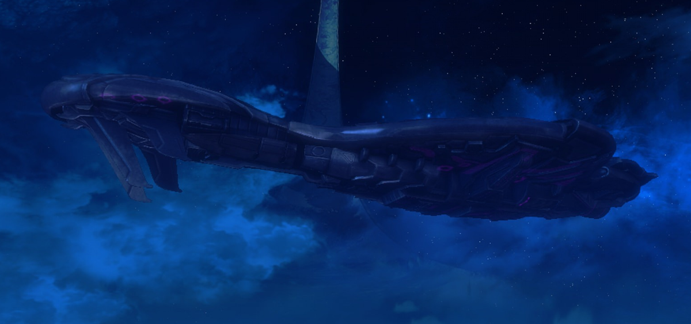
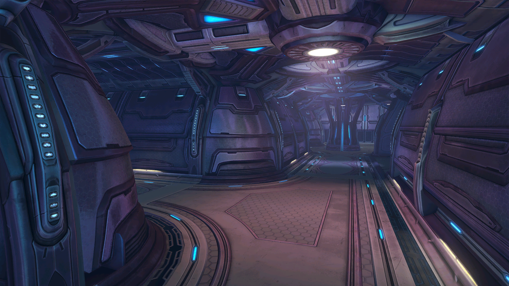

Mergi la inceput
Mergi inapoi
Thruth and Reconciliation
Misiunea începe într-un peisaj nocturn, cu Master Chief și o echipă de soldați UNSC
infiltrându-se într-o navă Covenant staționată pe inel. Utilizând o pușcă cu lunetă,
ucătorul elimină inamicii din umbră înainte de a pătrunde în navă.După lupte intense
împotriva soldaților Covenantechipa reușește să-l salveze pe Keyes. Acesta dezvăluie că
Covenant caută ceva foarte important pe Halo, iar jucătorul trebuie să afle mai multe.


Urmatorul nivel.